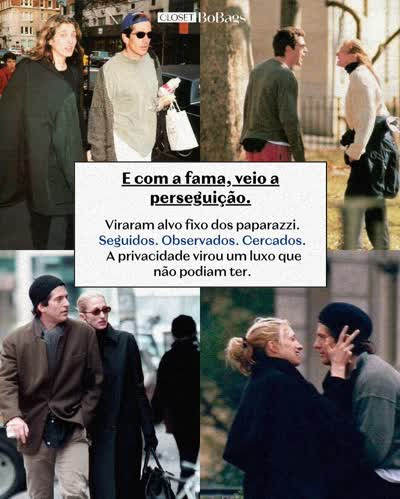
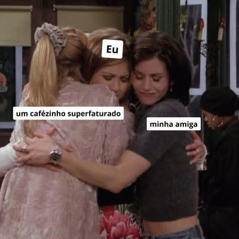
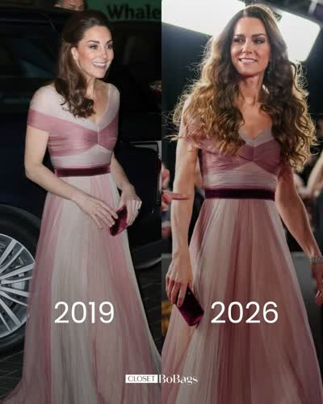
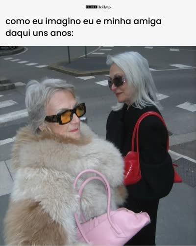
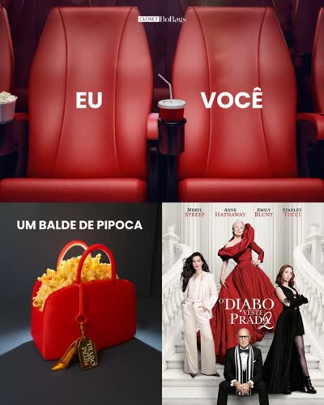

A gente não produz no dia de postar. Prepara com antecedência — sobra tempo pra caprichar, revisar e reagir ao que surgir.
Pautas da próxima semana a partir da grade + eventos.
Arte, legenda e stories de vários dias de uma vez.
Cada peça tem a nossa cara e o CTA certo?
Programar tudo. No dia, só acompanhar.
O objetivo é chegar no dia de postar com tudo pronto e agendado. O trabalho acontece antes.
Abra A semana ↗ pra ver a grade e cruze com os eventos do período (ski, MET, estreias, Copa...). Defina o tema de cada dia — o assunto que amarra o par manhã + noite.
Com os temas definidos, produza vários dias de uma vez. Pra cada dia: duplique a arte no Canva, escreva a legenda, separe os stories nas pastas. Em lote mantém consistência e economiza tempo.
Antes de agendar: tem a nossa voz (humana, opinativa, humor culto)? A noite converte de verdade (nome + marca + preço)? Não tem cara de robô?
Programe tudo. No dia, o trabalho é leve: acompanhar stories, responder a comunidade e ficar de olho na Oportunidade.
Cada um tem um trabalho. Trabalhamos com o visual — então olhe o exemplo de verdade, clicando.
Escolha o dia. Cada um tem o par (manhã atrai + noite converte) com exemplo visual, e a sequência de stories. É o mapa pra planejar — não pra produzir no susto.
Bolsas (seg, qui) · Ski (qua, dom) · Assinatura (ter) · Entrega expressa SP (sex + sáb cedo) · Agendamento showroom 3× (ter, qui, sáb).
Lemos os 47 melhores posts de 20 meses — card a card, frame a frame. Isto é o que os dados provaram, e é a base de toda a estratégia.





Os maiores números vêm de lado-a-lado de celeb ("repetir grife é chique") e meme com convite social ("marca a amiga"). São os motores de gente nova chegando — mas o meme viraliza porque tem o convite; a comparação tem alcance mas menos compartilhamento.
Editorial denso e dica de styling/cuidado não explodem em views, mas geram os maiores salvamentos — o público guarda pra decidir depois. É o meio do funil. Se preciso de decisão, faço isto; se preciso de alcance, faço meme.
Catálogo puro tem o menor engajamento de todos. A venda funciona quando vem atrás de uma isca cultural: a celeb encanta de manhã, a peça do acervo aparece à noite com nome + marca + preço.
Humor culto de moda e pop, opinião cultural, conversa real. Nada com cara de robô. Até o meme só funciona colado no nosso jeito de ver moda. Esse core não é bobeira — é o que faz o Instagram funcionar.
Não é só quem vive de luxo. Alugar dá acesso: a advogada que quer estar bem vestida em eventos de trabalho sem gastar numa bolsa só; a criadora que gira looks no trend sem comprar cada um; a família que não vai comprar look de ski pra viajar uma vez. Vendemos desejo e esperteza.
Acompanhe cada post do planejamento à publicação. Marque conforme avança — fica salvo no seu navegador. O controle de aprovação continua no Trello.